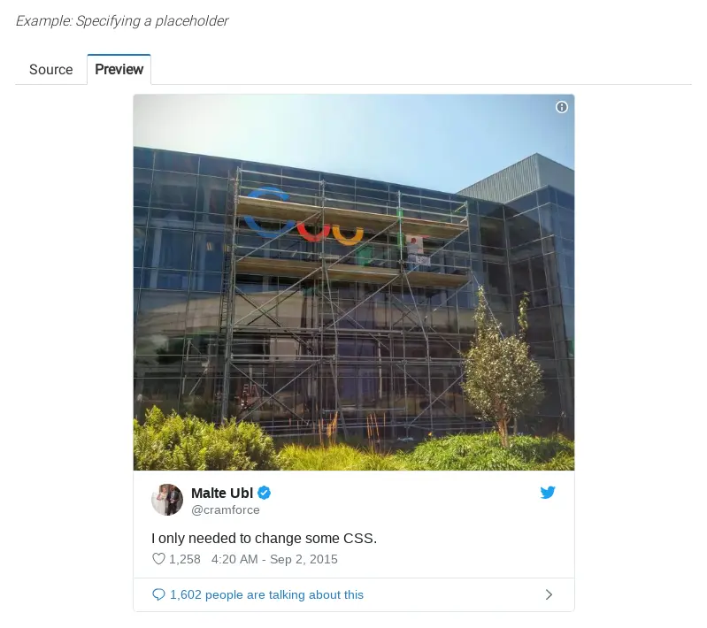
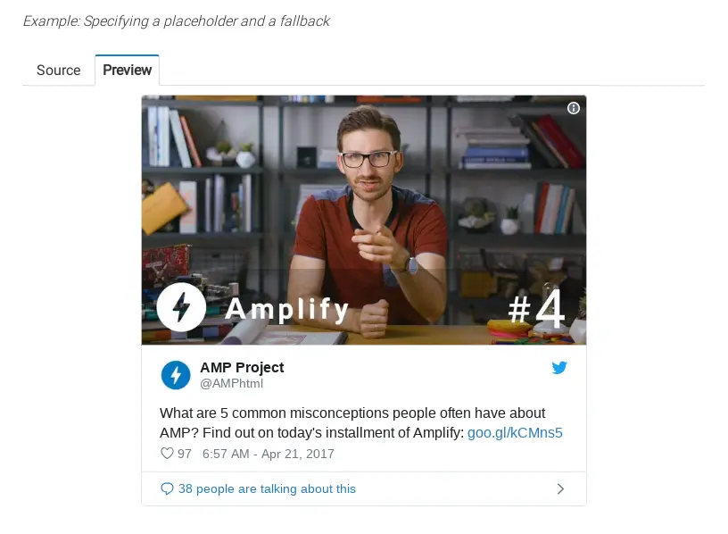
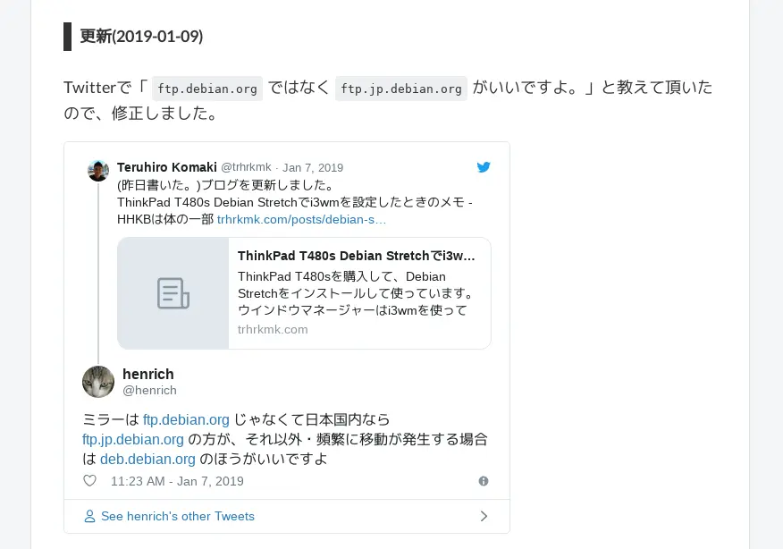

Hugo(AMP対応)にTwitterのツイートを埋め込む時のメモ
このブログはRobustを使わせて頂いております。
AMPに対応してますし素敵なThemeで、すごく気に入っています！
開発者の @dim0627 さん、本当にありがとうございます！
ということで、タイトルの通りAMPに対応しているThemeにおいて、Twitterのツイートを埋め込むときのメモです。
今回は、shortcodeにて実装しました。簡単なので、ぜひともチャレンジして貰えればと思います。
ドキュメントを確認する
まずはドキュメントを確認する。
以下のスクリプトを追加して。
<script async custom-element="amp-twitter" src="https://cdn.ampproject.org/v0/amp-twitter-0.1.js"></script>
以下のHTLMで表示できます。
<amp-twitter width="375"
height="472"
layout="responsive"
data-tweetid="885634330868850689">
</amp-twitter>
Placeholders & fallbacksについて
一応、英語を翻訳してみました。
An element marked with a placeholder attribute displays while the content for the Tweet or Moment is loading or initializing. Placeholders are hidden once the AMP component’s content displays. An element marked with a fallback attribute displays if amp-twitter isn’t supported by the browser or if the Tweet or Moment doesn’t exist or has been deleted.
こんな感じになりました。
TweetまたはMomentのコンテンツの読み込み中または初期化中に、プレースホルダ属性でマークされた要素が表示されます。 AMPコンポーネントのコンテンツが表示されると、プレースホルダは非表示になります。 amp-twitterがブラウザでサポートさ れていない場合、またはTweetまたはMomentが存在しないか削除されている場合は、fallback属性でマークされた要素が表示されます。
こんな感じで指定できるようです。
今回作成するshortcodeでは、Placeholdersを考慮してません…
Source
<amp-twitter width="375"
height="472"
layout="responsive"
data-tweetid="638793490521001985">
<blockquote placeholder>
<p>I only needed to change some CSS.
<a href="http://t.co/LvjLbjgY9F">pic.twitter.com/LvjLbjgY9F</a>
</p>— Malte Ubl (@cramforce)
<a href="https://twitter.com/cramforce/status/638793490521001985">September 1, 2015</a>
</blockquote>
</amp-twitter>
Previw

Source
<amp-twitter width="390"
height="330"
layout="responsive"
data-tweetid="855178606556856320">
<blockquote placeholder>
<p>What are 5 common misconceptions people often have about AMP? Find out on today's installment of Amplify:
<a href="https://t.co/kaSvV8SQtI">https://t.co/kaSvV8SQtI</a>
<a href="https://t.co/Cu9VYOmiKV">pic.twitter.com/Cu9VYOmiKV</a>
</p>— AMP Project (@AMPhtml)
<a href="https://twitter.com/AMPhtml/status/855178606556856320">April 20, 2017</a>
</blockquote>
<div fallback>
An error occurred while retrieving the Tweet. It might have been deleted.
</div>
</amp-twitter>
Previw

scriptを追加する
早速、scriptを追加します。
まずは私の環境を…
(ins) ~/go/src/github.com/hoge/trhrkmk.github.io [master *%=] $ pwd
/home/teruhiro/go/src/github.com/hoge/trhrkmk.github.io
(cmd) ~/go/src/github.com/hoge/trhrkmk.github.io [master *%=] $ tree ./layouts/
./layouts/
├── _default
│ ├── baseof.amp.html
│ ├── baseof.html
│ ├── summary.amp.html
│ └── summary.html
├── partials
│ ├── addthis.html
│ ├── addthis-script.html
│ ├── adsense.amp.html
│ ├── adsense.body.amp.html
│ ├── adsense.html
│ ├── ads.html
│ ├── drift.html
│ ├── favicon.html
│ ├── sidebar.html
│ └── styles.css
└── shortcodes
├── img.amp.html
├── img.html
└── twitter.amp.html
3 directories, 17 files
./layouts/_default/baseof.amp.htmlに追加する。
vimで編集する。
(ins) ~/go/src/github.com/hoge/trhrkmk.github.io [master *%=] $ vim ./layouts/_default/baseof.amp.html
先程のscriptを追加します。
<!DOCTYPE html>
<html ⚡>
<head>
{{ partial "meta.html" . }}
<style amp-boilerplate>body{-webkit-animation:-amp-start 8s steps(1,end) 0s 1 normal both;-moz-animation:-amp-start 8s steps(1,end) 0s 1 normal both;-ms-animation:-amp-start 8s steps(1,end) 0s 1 normal both;animation:-amp-start 8s steps(1,end) 0s 1 normal both}@-webkit-keyframes -amp-start{from{visibility:hidden}to{visibility:visible}}@-moz-keyframes -amp-start{from{visibility:hidden}to{visibility:visible}}@-ms-keyframes -amp-start{from{visibility:hidden}to{visibility:visible}}@-o-keyframes -amp-start{from{visibility:hidden}to{visibility:visible}}@keyframes -amp-start{from{visibility:hidden}to{visibility:visible}}</style><noscript><style amp-boilerplate>body{-webkit-animation:none;-moz-animation:none;-ms-animation:none;animation:none}</style></noscript>
<script async src="https://cdn.ampproject.org/v0.js"></script>
<script async custom-element="amp-analytics" src="https://cdn.ampproject.org/v0/amp-analytics-0.1.js"></script>
<script async custom-element="amp-twitter" src="https://cdn.ampproject.org/v0/amp-twitter-0.1.js"></script>
{{ with .Site.Params.googlefonts }}
<link href="{{ . }}" rel="stylesheet">
{{ else }}
<link href="https://fonts.googleapis.com/css?family=Roboto+Slab:400,700" rel="stylesheet">
{{ end }}
<link href="https://maxcdn.bootstrapcdn.com/font-awesome/4.5.0/css/font-awesome.min.css" rel="stylesheet">
<title>{{ block "title" . }}{{ end }}{{ .Site.Title }}</title>
{{ block "meta" . }}{{ end }}
<style amp-custom>
{{ replaceRE " +" " " (replaceRE "\n" "" (partial "styles.css" .)) | safeCSS }}
{{ replaceRE " +" " " (replaceRE "\n" "" (partial "custom.css" .)) | safeCSS }}
{{ with .Site.Params.fontfamily }} body { font-family: {{ . | safeCSS }}; } {{ end }}
{{ with .Site.Params.logofontfamily }} .h-logo { font-family: {{ . | safeCSS }}; } {{ end }}
.l-container { max-width: 40rem; margin: 0 auto; }
</style>
{{ partial "adsense.amp.html" . }}
</head>
.
.
.
shortcodeを作る
shortcodeを作る。
(ins) ~/go/src/github.com/hoge/trhrkmk.github.io [master *%=] $ vim ./layouts/shortcodes/twitter.amp.html
twitter.amp.html
{{ $id := .Get 0 }}
<amp-twitter
data-tweetid="{{$id}}"
width="800"
height="600"
layout="responsive">
</amp-twitter>
markdownに書く
これで設定は終わりなので、markdownにて書いてみます。
実際の記事の感じです。
### 更新(2019-01-09)
Twitterで「`ftp.debian.org`ではなく`ftp.jp.debian.org`がいいですよ。」と教えて頂いたので、修正しました。
{{% twitter 1082100466261979138 %}}
表示を確認する
実際の表示はこんな感じです。

あとがき
どこかのタイミングで、Hugoについても、もっと勉強したいなー